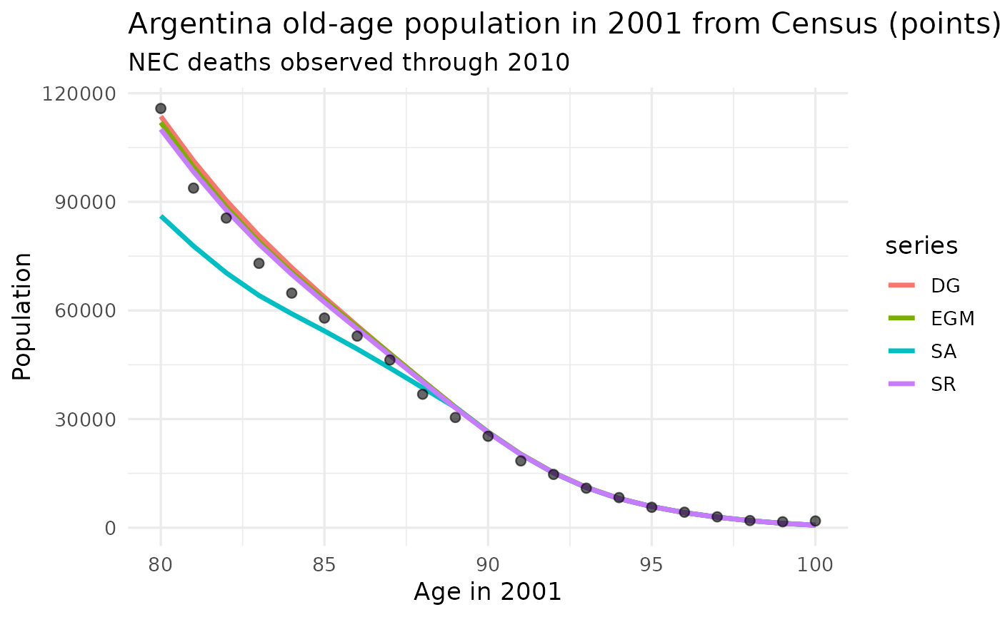

ExtinctGenerationMethods.RmdExtinct generation methods estimate old-age population stocks from registered deaths by cohort. The basic extinct generation method (EGM) is most direct: once a cohort is extinct, the number of people alive at a given age is the sum of the deaths observed for that cohort from that age onward (specially in ages where the migration is negligible) (Vincent 1951). In a Lexis diagram, period deaths by calendar year and age are first assigned to birth cohorts, and cohort population is then reconstructed by reverse cumulative summation. The method depends strongly on the completeness and age accuracy of death registration. It also requires waiting until the cohort is extinct, or at least observed to a very high age. In practical applications is also useful to get a minimum, to be compared with another source, like a census.
Nearly-extinct cohort (NEC) methods relax the requirement of complete extinction. They use deaths observed up to a cutoff year and estimate the survivors who remain alive after that cutoff. The package implements three variants discussed by Terblanche and Wilson (Terblanche and Wilson 2015):
SR: survivor ratio method. Estimates the size of a
nearly- extinct cohort for a recent date and age on the basis of the
survivorship of older cohorts to the same age, averaging a cohort window
for smoothing due to small exposure at advanced ages.DG: Das Gupta method. estimates future cohort deaths,
based on death ratios: the number of deaths at a particular age relative
to deaths at the previous age, averaged over a number of older
cohorts.SA: survivor ratio advanced method. The average
improvement in survivor ratios measured at a specific age over ten
(deafault) older cohorts is assumed to apply to the youngest
cohort.In this article, the Argentina application uses complete deaths through 2023 to construct an EGM benchmark for the 2001 population aged 80 and over. We then pretend that deaths are only available up to an earlier cutoff year and compare the NEC estimates with the EGM benchmark.
The package includes two data objects from Argentina:
arg_pop: census population in 2001 by single year of
age, 60+.arg_deaths: deaths 2001-2023 by year and single year of
age, 60+.
library(dplyr)
library(tidyr)
library(ggplot2)
head(arg_pop)
#> year age pop
#> 1 1991 0 700886
#> 2 1991 1 606919
#> 3 1991 2 676918
#> 4 1991 3 676693
#> 5 1991 4 688657
#> 6 1991 5 664485
head(arg_deaths)
#> year age deaths
#> 1 2001 0 11271.0000
#> 2 2001 1 726.0000
#> 3 2001 2 530.0000
#> 4 2001 3 328.0000
#> 5 2001 4 230.0000
#> 6 2001 5 224.0836Our goal is to compare population stock in 80+ by single age in 2001, between these methods and the census. There is an increasing interest to contrast age-overstatement patterns in countries with “more than expected” population in oldest ages (Battocchio 2024). For the incomplete scenario (to test near extinct variants), we will truncate deaths until year 2010. Although we observe events for ages higher than 105, as a conservative measure we will assume . Age/year parameters are:
year_pop <- 2001
year_cut <- 2010
omega <- 105
min_age <- 80First, construct the EGM benchmark for the population aged 80 to
omega in 2001. The egm() function assigns
deaths to birth cohorts and reconstructs the population by reverse
cumulative cohort deaths.
P_egm <- egm(
y = arg_deaths$year,
x = arg_deaths$age,
d = arg_deaths$deaths
) |>
filter(y == year_pop, x >= min_age, x <= omega) |>
select(yb, x, EGM = pop)
head(P_egm)
#> yb x EGM
#> 1 1895 105 30.24397
#> 2 1896 104 51.19609
#> 3 1897 103 94.30797
#> 4 1898 102 183.13977
#> 5 1899 101 361.33022
#> 6 1900 100 687.85334Next, retain only deaths available up to the cutoff year and apply the three NEC variants. The comparison is intentionally framed as a validation exercise: how close would each NEC method have been to the EGM estimate if only deaths through 2010 had been available?
arg_deaths_cut <- arg_deaths |>
filter(year <= year_cut)
P_nec <- bind_rows(
SR = nec(
y = arg_deaths_cut$year,
x = arg_deaths_cut$age,
d = arg_deaths_cut$deaths,
method = "SR",
k = 5,
m = 5,
min_age = min_age,
omega = omega
),
DG = nec(
y = arg_deaths_cut$year,
x = arg_deaths_cut$age,
d = arg_deaths_cut$deaths,
method = "DG",
m = 5,
min_age = min_age,
omega = omega
),
SA = nec(
y = arg_deaths_cut$year,
x = arg_deaths_cut$age,
d = arg_deaths_cut$deaths,
method = "SA",
k = 5,
m = 5,
n = 10,
min_age = min_age,
omega = omega
),
.id = "method"
) |>
filter(y == year_pop, x >= min_age, x <= omega) |>
select(method, yb, x, NEC = pop) |>
pivot_wider(names_from = method, values_from = NEC)
head(P_nec)
#> # A tibble: 6 × 5
#> yb x SR DG SA
#> <dbl> <int> <dbl> <dbl> <dbl>
#> 1 1906 94 8049. 8021. 8010.
#> 2 1907 93 11111. 11112. 11075.
#> 3 1908 92 15142. 15177. 15113.
#> 4 1909 91 20226. 20293. 20214.
#> 5 1910 90 26287. 26383. 26330.
#> 6 1911 89 33085. 33225. 33208.Parameters
and
are the number of years and previous cohorts where the ratios are
modelled (used by SR and SA). (Terblanche and
Wilson 2015) shows that
gives the same results as
.
Parameter
is the number of older cohorts used to estimate survival improvement in
SA method. At the cutoff, cohorts that are already extinct under the
omega assumption can be absent from the NEC output. For
those cohorts, we use the truncated EGM value, which is equivalent to
the EGM benchmark under the assumed extinction age.
comparison <- P_egm |>
left_join(P_nec, by = c("yb", "x")) |>
mutate(
SR = coalesce(SR, EGM),
DG = coalesce(DG, EGM),
SA = coalesce(SA, EGM)
) |>
arrange(x)
comparison |>
mutate(across(where(is.numeric), trunc)) |>
knitr::kable(format.args = list(big.mark = ","))| yb | x | EGM | SR | DG | SA |
|---|---|---|---|---|---|
| 1,920 | 80 | 111,923 | 110,023 | 113,612 | 86,114 |
| 1,919 | 81 | 99,599 | 98,310 | 101,333 | 77,782 |
| 1,918 | 82 | 88,579 | 87,723 | 90,382 | 70,394 |
| 1,917 | 83 | 78,963 | 78,332 | 80,643 | 64,142 |
| 1,916 | 84 | 70,525 | 69,958 | 71,837 | 59,092 |
| 1,915 | 85 | 62,844 | 62,267 | 63,644 | 54,333 |
| 1,914 | 86 | 55,473 | 54,896 | 55,786 | 49,363 |
| 1,913 | 87 | 48,101 | 47,592 | 48,096 | 44,113 |
| 1,912 | 88 | 40,656 | 40,278 | 40,540 | 38,671 |
| 1,911 | 89 | 33,328 | 33,084 | 33,225 | 33,208 |
| 1,910 | 90 | 26,450 | 26,287 | 26,382 | 26,330 |
| 1,909 | 91 | 20,342 | 20,225 | 20,293 | 20,213 |
| 1,908 | 92 | 15,231 | 15,141 | 15,177 | 15,113 |
| 1,907 | 93 | 11,180 | 11,110 | 11,112 | 11,075 |
| 1,906 | 94 | 8,103 | 8,049 | 8,021 | 8,009 |
| 1,905 | 95 | 5,830 | 5,830 | 5,830 | 5,830 |
| 1,904 | 96 | 4,162 | 4,162 | 4,162 | 4,162 |
| 1,903 | 97 | 2,915 | 2,915 | 2,915 | 2,915 |
| 1,902 | 98 | 1,951 | 1,951 | 1,951 | 1,951 |
| 1,901 | 99 | 1,210 | 1,210 | 1,210 | 1,210 |
| 1,900 | 100 | 687 | 687 | 687 | 687 |
| 1,899 | 101 | 361 | 361 | 361 | 361 |
| 1,898 | 102 | 183 | 183 | 183 | 183 |
| 1,897 | 103 | 94 | 94 | 94 | 94 |
| 1,896 | 104 | 51 | 51 | 51 | 51 |
| 1,895 | 105 | 30 | 30 | 30 | 30 |
Population aged 80 for the census, EGM and NEC estimates can be compared. First result is that death data is higher than census, so an independent source confirm the general dimension of population stock. Second results is that even not observing last 12 years one can get good results extrapolating death ratios, at least in this case for SR and DG options.
census_methods_comparison <- arg_pop |>
filter(year == year_pop, age >= min_age, age <= omega) |>
transmute(x = age, Census = pop) |>
left_join(comparison |> select(x, EGM, SR, DG, SA), by = "x")
census_methods_comparison |>
summarise(
Census = sum(Census, na.rm = TRUE),
EGM = sum(EGM, na.rm = TRUE),
SR = sum(SR, na.rm = TRUE),
DG = sum(DG, na.rm = TRUE),
SA = sum(SA, na.rm = TRUE)
) |>
mutate(across(where(is.numeric), trunc)) |>
knitr::kable(format.args = list(big.mark = ","))| Census | EGM | SR | DG | SA |
|---|---|---|---|---|
| 753,412 | 788,063 | 780,041 | 796,846 | 674,716 |
The age pattern is useful because the total 80+ population can hide offsetting errors by age. This plot compares EGM and each NEC variant by single year of age in 2001.
census_methods_comparison |>
pivot_longer(-x, names_to = "series", values_to = "pop") |>
ggplot(aes(x, pop)) +
geom_line(data = . %>% filter(series != "Census"), aes(col = series), linewidth = 1.2) +
geom_point(data = . %>% filter(series == "Census"), size = 2, alpha = .6, col = 1) +
labs(
x = paste("Age in", year_pop),
y = "Population",
linetype = NULL,
title = "Argentina old-age population in 2001 from Census (points), EGM and NEC methods",
subtitle = paste0(
"NEC deaths observed through ", year_cut
)
) +
theme_minimal(base_size = 13)
For estimates about centenarians a more detiled study of highest ages needs to be done, re-defining based on VR evaluation.